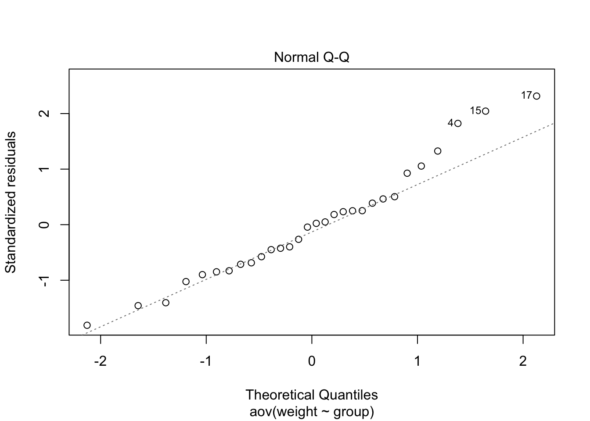
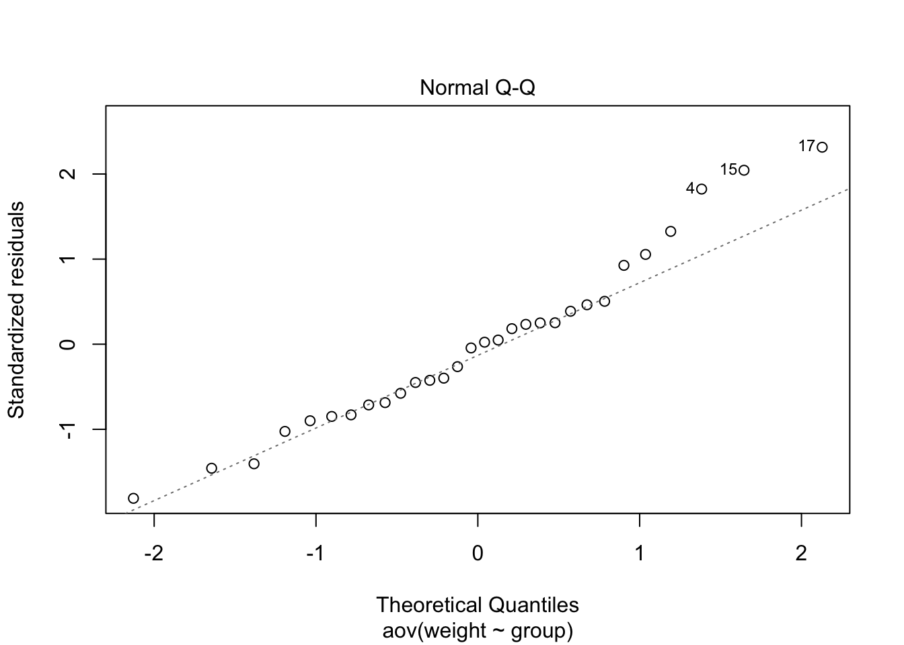

Lab 04: One-way ANOVA
One-way analysis of variance provides an omnibus test when comparing means for three or more groups (when using ANOVA to compare two group means, \(F = t^2\)). The null hypothesis of ANOVA is that all group means are equal, \(H_0: \mu_1 = \mu_2 = \mu_3 = \cdots = \mu_k\), while the alternative hypothesis is that at least one mean is different. The analysis of variance is based on a ratio of variance due to group difference to variance due to unknown (random) errors within groups, i.e., \[F = \frac{MS_{between}}{MS_{within}}\]
When designed is balanced (equal \(n\)), \(MS_{between} = \frac{SS_{between}}{df_{between}} = \frac{n\sum(\bar{Y}_k-\bar{Y})^2}{k-1}\), where \(k\) is a number of groups; and \(MS_{within} = \frac{SS_{within}}{df_{within}} = \frac{\sum (Y_{ik}-\bar{Y}_k)^2}{N-k}\).
Assumptions
Similar to t-tests, ANVOA has three main assumptions.
- Normality of residual. That is, the distribution of each group (unexplained variance) is normal. We could use a Q-Q plot or Shapiro-Wilk test to check for normality.
- Homogeneity of variance. The variance of each group are all equals, which suggests that all error variances are equal. This is typically tested by Levene’s test for equality of variance.
- Independence of observation. Each observation (e.g., participant) is independent, which results in independence of an error term. This could not be detected or fixed with statistics. It can only be inferred from the research design.
Let’s use an R built-in dataset, PlantGrowth. This dataset has two variables: weight, which is numeric, and group, which is a factor. The group factor has three levels: ctrl for control, trt1 for treatment 1, and trt2 for treatment 2.
data(PlantGrowth)
PlantGrowth## weight group
## 1 4.17 ctrl
## 2 5.58 ctrl
## 3 5.18 ctrl
## 4 6.11 ctrl
## 5 4.50 ctrl
## 6 4.61 ctrl
## 7 5.17 ctrl
## 8 4.53 ctrl
## 9 5.33 ctrl
## 10 5.14 ctrl
## 11 4.81 trt1
## 12 4.17 trt1
## 13 4.41 trt1
## 14 3.59 trt1
## 15 5.87 trt1
## 16 3.83 trt1
## 17 6.03 trt1
## 18 4.89 trt1
## 19 4.32 trt1
## 20 4.69 trt1
## 21 6.31 trt2
## 22 5.12 trt2
## 23 5.54 trt2
## 24 5.50 trt2
## 25 5.37 trt2
## 26 5.29 trt2
## 27 4.92 trt2
## 28 6.15 trt2
## 29 5.80 trt2
## 30 5.26 trt2str(PlantGrowth$group) #check if group is a factor. ## Factor w/ 3 levels "ctrl","trt1",..: 1 1 1 1 1 1 1 1 1 1 ...table(PlantGrowth$group) # equal n for each group##
## ctrl trt1 trt2
## 10 10 10Plot the data
For any analysis, you should always look at the data first to check for any anomalies. We can use the boxplot function
boxplot(weight ~ group, data = PlantGrowth) 
Alternatively, you can use ggplot2.
library(ggplot2)
ggplot(PlantGrowth, aes(x = group, y = weight)) +
geom_boxplot() +
theme_classic()
or a violin plot
ggplot(PlantGrowth, aes(x = group, y = weight, fill = group)) +
geom_violin() +
geom_jitter(width = .15) + #plot data points with random width
theme_classic()As you can see, the condition trt1 consists of some outliers. For now, let’s proceed with the analysis. We will come back to check for assumptions later.
aov function
To run ANOVA in R, you will need to create a model object with aov function. The formula will be in a form of y ~ x or dv ~ iv, that is the DV (Y) is predicted/explained/affected by IV (X). In this case, weight ~ group.
plant_aov <- aov(weight ~ group, data = PlantGrowth)
str(plant_aov) # Look at the structure of aov class object. ## List of 13
## $ coefficients : Named num [1:3] 5.073 -0.041 -0.412
## ..- attr(*, "names")= chr [1:3] "(Intercept)" "group1" "group2"
## $ residuals : Named num [1:30] -0.862 0.548 0.148 1.078 -0.532 ...
## ..- attr(*, "names")= chr [1:30] "1" "2" "3" "4" ...
## $ effects : Named num [1:30] -27.786 1.105 -1.596 1.088 -0.522 ...
## ..- attr(*, "names")= chr [1:30] "(Intercept)" "group1" "group2" "" ...
## $ rank : int 3
## $ fitted.values: Named num [1:30] 5.03 5.03 5.03 5.03 5.03 ...
## ..- attr(*, "names")= chr [1:30] "1" "2" "3" "4" ...
## $ assign : int [1:3] 0 1 1
## $ qr :List of 5
## ..$ qr : num [1:30, 1:3] -5.477 0.183 0.183 0.183 0.183 ...
## .. ..- attr(*, "dimnames")=List of 2
## .. .. ..$ : chr [1:30] "1" "2" "3" "4" ...
## .. .. ..$ : chr [1:3] "(Intercept)" "group1" "group2"
## .. ..- attr(*, "assign")= int [1:3] 0 1 1
## .. ..- attr(*, "contrasts")=List of 1
## .. .. ..$ group: chr "contr.sum"
## ..$ qraux: num [1:3] 1.18 1.19 1.09
## ..$ pivot: int [1:3] 1 2 3
## ..$ tol : num 1e-07
## ..$ rank : int 3
## ..- attr(*, "class")= chr "qr"
## $ df.residual : int 27
## $ contrasts :List of 1
## ..$ group: chr "contr.sum"
## $ xlevels :List of 1
## ..$ group: chr [1:3] "ctrl" "trt1" "trt2"
## $ call : language aov(formula = weight ~ group, data = PlantGrowth)
## $ terms :Classes 'terms', 'formula' language weight ~ group
## .. ..- attr(*, "variables")= language list(weight, group)
## .. ..- attr(*, "factors")= int [1:2, 1] 0 1
## .. .. ..- attr(*, "dimnames")=List of 2
## .. .. .. ..$ : chr [1:2] "weight" "group"
## .. .. .. ..$ : chr "group"
## .. ..- attr(*, "term.labels")= chr "group"
## .. ..- attr(*, "order")= int 1
## .. ..- attr(*, "intercept")= int 1
## .. ..- attr(*, "response")= int 1
## .. ..- attr(*, ".Environment")=<environment: R_GlobalEnv>
## .. ..- attr(*, "predvars")= language list(weight, group)
## .. ..- attr(*, "dataClasses")= Named chr [1:2] "numeric" "factor"
## .. .. ..- attr(*, "names")= chr [1:2] "weight" "group"
## $ model :'data.frame': 30 obs. of 2 variables:
## ..$ weight: num [1:30] 4.17 5.58 5.18 6.11 4.5 4.61 5.17 4.53 5.33 5.14 ...
## ..$ group : Factor w/ 3 levels "ctrl","trt1",..: 1 1 1 1 1 1 1 1 1 1 ...
## ..- attr(*, "terms")=Classes 'terms', 'formula' language weight ~ group
## .. .. ..- attr(*, "variables")= language list(weight, group)
## .. .. ..- attr(*, "factors")= int [1:2, 1] 0 1
## .. .. .. ..- attr(*, "dimnames")=List of 2
## .. .. .. .. ..$ : chr [1:2] "weight" "group"
## .. .. .. .. ..$ : chr "group"
## .. .. ..- attr(*, "term.labels")= chr "group"
## .. .. ..- attr(*, "order")= int 1
## .. .. ..- attr(*, "intercept")= int 1
## .. .. ..- attr(*, "response")= int 1
## .. .. ..- attr(*, ".Environment")=<environment: R_GlobalEnv>
## .. .. ..- attr(*, "predvars")= language list(weight, group)
## .. .. ..- attr(*, "dataClasses")= Named chr [1:2] "numeric" "factor"
## .. .. .. ..- attr(*, "names")= chr [1:2] "weight" "group"
## - attr(*, "class")= chr [1:2] "aov" "lm"The object consists of many information, such as, model, coefficient, effects, residuals, etc. To get an typical ANOVA table, use summary(ojbect).
summary(plant_aov)## Df Sum Sq Mean Sq F value Pr(>F)
## group 2 3.766 1.8832 4.846 0.0159 *
## Residuals 27 10.492 0.3886
## ---
## Signif. codes: 0 '***' 0.001 '**' 0.01 '*' 0.05 '.' 0.1 ' ' 1We will come back to an interpretation later. Now, let’s use plot on the aov object to check for any assumption violations. We will focus on the first two plots.
plot(plant_aov) 

Homogeneity of Variances
The Residuals vs Fitted plot shows the relationship between residuals (errors; in this case the within group variations) against fitted values(or predicted values; in this case the group means). This plot is used to assess the homogeneity of variances assumption. We can see three groupings in the plot; one for each condtion The first grouping (fitted value or group mean below 4.8) was from trt1, the group with the lowest means. The second grouping (just above 5.0 ) was from ctrl, the control group. Lastly, the third grouping (above 5.4) was from trt2, which had the highest mean.
plot(plant_aov, 1)If the group variances are equal, there should be the same amount of vertical spread across three groups. However, as you can see in this plot, the spread is highest in trt1, and R also labeled the extreme data points with their row numbers. The second grouping, which is ctrl, also spread a bit wide, but it is less concerning than trt1. In other words, we might suspect that the homogeneity of variances assumption might be violated. We can conduct a test for homogeneity of variance, known as Levene’s test.
#install.packages("car")
library(car)
leveneTest(weight ~ group, data = PlantGrowth)## Levene's Test for Homogeneity of Variance (center = median)
## Df F value Pr(>F)
## group 2 1.1192 0.3412
## 27The Levene’s test was not significant, suggesting that group variances may not be different. Normally, we would assume that all variances were equal. However, because of the small sample size (each n = 10; N = 30), it was also possible that we lack power. In this case, it might be a better option to assume a worse posibility and use Welch’s test instead (more on that later).
Normality of Residuals
The Normal Q-Q plot assesses the normality assumption. It combines all residuals (errors) and shows the deviation from normality in a single plot as well as flags for extreme data points.
plot(plant_aov, 2)
We can test the normality assumption with Shapiro-Wilk test.
# Run Shapiro-Wilk test
shapiro.test(plant_aov$residuals) #Extract residuals from aov object and use them in shapiro.test.##
## Shapiro-Wilk normality test
##
## data: plant_aov$residuals
## W = 0.96607, p-value = 0.4379The test was not significant, suggesting that the normaility was not violated. If you want to create Q-Q plots for each group, use qqPlot from car package.
car::qqPlot(weight ~ group, data = PlantGrowth)The strongest deviations from normality were found in trt1. These two data points affected both normality and homogeneity of variances. Anyway the departure from both assumptions did not seem to be serious, we will proceed with a typical ANOVA F-test.
Back to ANOVA
summary(plant_aov)## Df Sum Sq Mean Sq F value Pr(>F)
## group 2 3.766 1.8832 4.846 0.0159 *
## Residuals 27 10.492 0.3886
## ---
## Signif. codes: 0 '***' 0.001 '**' 0.01 '*' 0.05 '.' 0.1 ' ' 1The table contains information from the analysis of variance. The group line shows the between-group/treatment effect of an independent variable along with its \(df\), \(SS\), \(MS\) , \(F\) value, and \(p\) value. The Residuals line represent the error or within-group effect.
In this analysis, the F value was 4.85 and statistically significant, suggesting that at least one group mean is different from others. However, we do not know which groups were different at this point. We will address that analysis in the next lab tutorial.
Effect Sizes
There are multiple ways to calculate effect sizes for ANOVA, e.g., Cohen’s \(f\), \(\eta^2\), and \(\omega^2\). We will use the effectsize package. Each function takes an input of a model object, in this case, plant_aov.
#install.packages("effectsize")
library(effectsize)
eta_squared(plant_aov)## For one-way between subjects designs, partial eta squared is equivalent to eta squared.
## Returning eta squared.## # Effect Size for ANOVA
##
## Parameter | Eta2 | 90% CI
## -------------------------------
## group | 0.26 | [0.04, 0.45]omega_squared(plant_aov)## For one-way between subjects designs, partial omega squared is equivalent to omega squared.
## Returning omega squared.## # Effect Size for ANOVA
##
## Parameter | Omega2 | 90% CI
## ---------------------------------
## group | 0.20 | [0.00, 0.40]cohens_f(plant_aov)## For one-way between subjects designs, partial eta squared is equivalent to eta squared.
## Returning eta squared.## # Effect Size for ANOVA
##
## Parameter | Cohen's f | 90% CI
## ------------------------------------
## group | 0.60 | [0.19, 0.91]The functions also provide a confidence interval of the effect sizes to help us see errors in effect size estimation. For this analysis, \(\eta^2 = .26\), \(\omega^2 = .20\), and Cohen’s \(f\) = 0.60.
- The \(\eta^2\) is a proportion of variance in Y that is explained by treatment X. This is the same as \(R^2\) in a simple regression.
- The \(\omega^2\) is an unbiased estimator of \(\eta^2\). The \(\omega^2\) is preferred when sample sizes are small.
- The Cohen’s \(f\) is a ratio of between-group SD to average within-group SD.
Welch’s test
We might opt to use Welch’s test in order to protect against Type I error if we are concerned about homogeneity of variances. The Welch’s test will adjust the df, resulting in df with decimals.
oneway.test(weight ~ group, data = PlantGrowth)##
## One-way analysis of means (not assuming equal variances)
##
## data: weight and group
## F = 5.181, num df = 2.000, denom df = 17.128, p-value = 0.01739In this case, the result was also significant (same as the regular F test.)